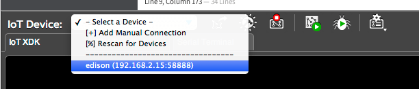

Once connected…
Ping or visit 192.168.2.15
You can now ping your Intel® Edison board on address “192.168.2.15” from Terminal or Command Prompt on your computer. Or visit http://192.168.2.15 from your web browser.
ping 192.168.2.15
Use SSH instead of a serial connection
Use Terminal or PuTTY to wirelessly SSH into the Intel® Edison at “192.168.2.15” instead of using a wired serial connection.
ssh root@192.168.2.15
(You can also continue to use ssh root@edison.local if your device is still named “edison”.)
Program IoT board while offline
The Intel® XDK IoT Edition IDE should automatically detect your Intel® Edison board. Select “192.168.2.15:58888” from the “IoT Device” drop down to upload your programs.

Ethernet over USB device not showing up Intel® XDK?
Shell into your board and restart the XDK Daemon.
systemctl restart xdk-daemon